作者：ikeno
twitter:@ikeno_mmd
最終更新日 2021/12/23
ikBokehはポストエフェクトによって、カメラのピントを擬似的に表現するエフェクトです。動作は重い部類に入ります。
参照：【MME】ikボケの使い方 (ニコニコ動画: sm27947881)
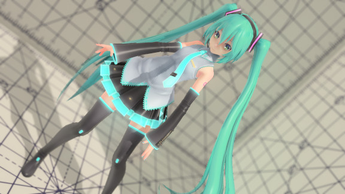
エフェクト使用例。
MMDのアクセサリに、"ikBokeh.x"を追加する。
アクセサリの描画順序を調整する。
基本的には、モデル、パーティクルなどカメラの先にあるものが先、 それからikBokeh.x、レンズフレアやトーンマップなどカメラ内、撮影後の加工エフェクトは後。の順にします。
ikBokeh.xより前にあるエフェクトはボケるので、例えば輪郭描画エフェクトの輪郭をボカしたい場合はikBokeh.xを後にし、ボカしたくないときはikBokeh.xを前にします。
ikBokeh.x をピントを合わせたいモデルの頭ボーンにぶら下げる。
(またはダミーボーンにぶら下げて、ダミーボーンの位置でピントを調整する。)
頭ボーンにぶら下げた場合、アクセサリのy, zを調整して、頭ボーンの中心から鼻先にズラすとよりピントが正しく合うようになります。
頭ボーンと鼻先の位置関係をチェックするには、小さな球のアクセサリなどをキャラの頭ボーンにぶら下げて位置を動かしてみると把握しやすいです。
コントローラ(ikBokehController.pmx)を追加する。
コントローラで調整する。
モーフのボケ+/-でボケる量を調整する。
モーフのテストモードでボケる範囲が確認できます。
その他の調整を行う。
コントローラ(ikBokehController.pmx)の表情モーフで指定するパラメータ
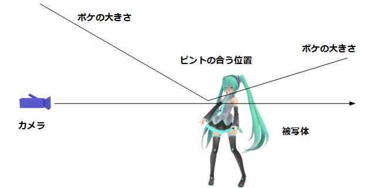
以下で説明に使う図。
ピントの位置を補正します。
0～1で+-50MMD単位(※1MMD単位は約10～12cm)調整します。
なお、コントローラのzを前後させることでも調整可能です。
通常は顔にピントを合せている状態で、一時的に手など顔以外にピントを合わせたい場合に使用します。
ピントが合っていない状態からピントを合わせる。またはその逆の演出を行いたい場合に使用します。
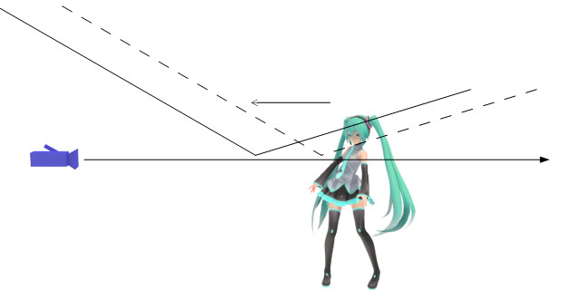
ピント位置を前に移動させる。
ピントの追従速度を遅らせます。1.0で完全に停止します。
被写体またはカメラが動いて、被写体とカメラとの距離が変わっても即座にピントを合わせられなくなります。
演出でピントの合う距離を固定したい場合に使用します。
ピント移動でオーバーシュートさせます。
ピントを高速に動かした場合に移動しすぎるようになります。
注：ピント遅延が0.0の場合は効果がありません。
AF測距モードで測距点基準でピントを合わせるモードにした場合の、
ピント計測位置の中心を指定します。
コントローラのxyでも測距点の位置は調整可能です。
テストモードで黄色い丸で表示されるのが、測距点の位置になります。
(注：AF測距モードが有効な場合にのみ黄色い丸は表示されます)
ピントの合う距離を水増しします。
これは実際のカメラには存在しない機能です。
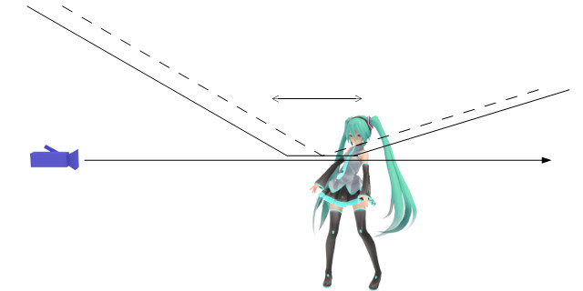
ピントの合う位置を増やす。
ボケる幅を調整します。
これは実際のカメラでは絞りの調整に当たります。
実際のカメラで絞りを調整すると画面の明るさやブレの大きさに影響を与えますが、このエフェクトでは無視されます。
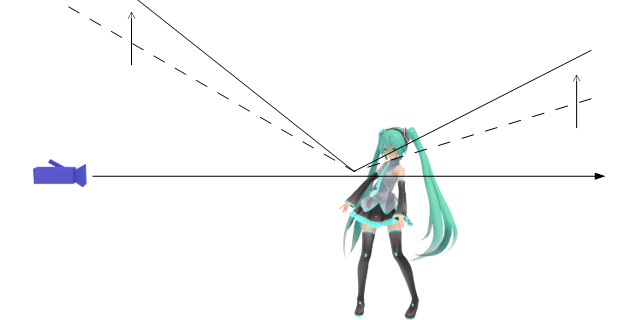
ボケる量を増やす。
前ボケを弱くします。
1にすることで、ピント位置より手前がボケなくなります。
ボケのサイズを大きくます。
0で等倍。1で2倍になります。ただしエフェクトの機能上限を越えた場合は制限されます。
CoCとはCircle of Confusion(錯乱円)の略で、いわゆる玉ボケのことです。
アクセサリのSiからも調整可能です。
明るい部分の色を強調します。
玉ボケDOF(Elle/データP)の機能を参考にしています。
絞りの状態を「絞り」モーフで指定します。
デフォルト(0)ではピントに応じて自動で開放と絞りを調整します。
自動の場合、ピント+を大きくするほど絞り形状は円に近づき、ピント-を大きくするほど絞り形状はn角形に近づきます。
絞り形状を指定します。
0だと円形、1に近いほどn角形に近づきます。
通常のカメラでは絞るほどボケのサイズは小さくなりますが、このエフェクトでは絞りサイズには影響を与えません。
手動絞りの値が1に近いほど、ここで指定した設定が有効になります。
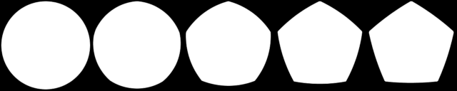
絞りよる絞り形状の変化。左が0.0、右が1.0
絞り形状を指定します。
0だと5角形、1に近づくほど、6,7,8,9角形と変化します。
本物のカメラではブレード/羽と呼ばれるパーツで絞りを実現していて、その枚数によって絞りの形が決まります。
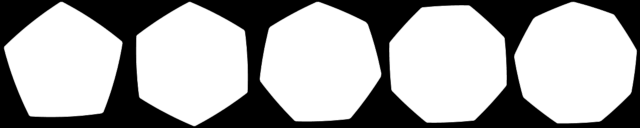
ブレード枚数による絞り形状の変化。左から5枚絞り(0.0)、6,7,8,9枚絞り(1.0)
一般的に高級カメラほどブレード枚数が多く、8枚か9枚になります。
ピントの合う範囲・ボケる範囲が分かりやすいように色を付けます。
0.5～0.75: ボケる範囲をゆるいグラデで表示
0.75～1.0: ボケる範囲をはっきりと塗り分ける。
各色の説明
緑：後ボケ (ピントが合う位置よりも後ろにある)
白：ピントが合っている。
青：完全にピントが合っている。(ジャスピン)
紫：前ボケ (ピントが合う位置よりも手前にある)
黄：AF測距モードの測距範囲。AFモードが有効な場合のみ表示される。
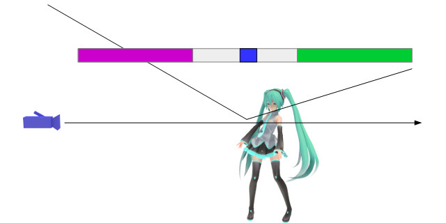
テストモードでの各色。
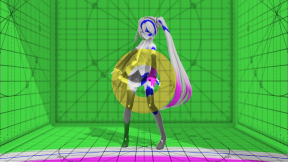
実際のテストモードの様子。(AF測距モード)
焦点のあたる距離をズラします。
ティルトする向きは、コントローラのティルトボーンで指定できます。
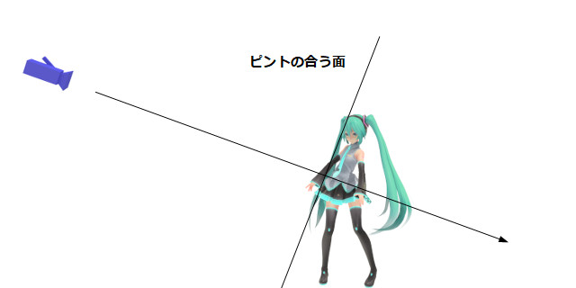
通常、焦点の当たる面は視線と垂直になる。
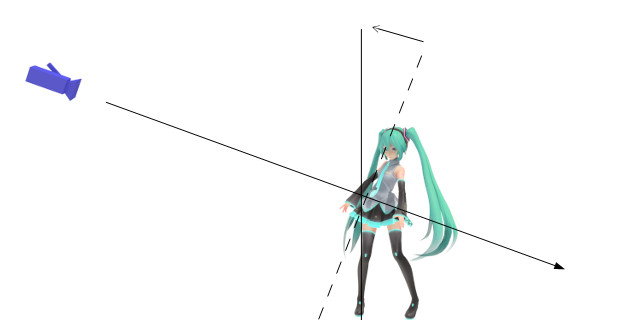
ティルトアップによって、焦点の当たる面を被写体に平行にした。
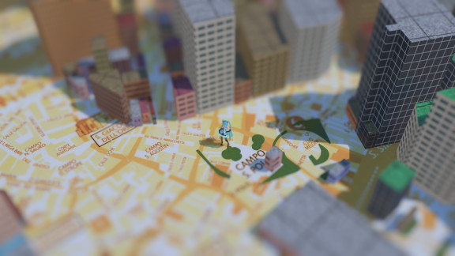
ティルトアップの使用例。
自動でピントを合わせるモードの有効・無効を指定します。
0.0でAF測距モード無効。アクセサリ(ikBokeh.x)の位置にピントを合わせる。
0.5で測距点(狭)の位置にピントを合わせる。
1.0で測距点(広)の位置にピントを合わせる。
1でマニュアルモードを有効にする。
以下のピント距離、焦点距離はマニュアルモードで使用するパラメータです。
マニュアルモード有効時のピント位置を指定します。
0～1でカメラから0～100MMD単位の位置にピントが合います。
ピント距離+/-と併用可能です。
マニュアルモード有効時の焦点距離を設定します。
0～1で0～100mmの設定になります。大きい数値ほどボケやすくなります。
ボケ+/-の影響を受けます。
ikBokeh.fx内を直接書き換えることで設定するパラメータ
コントローラの"CoCサイズ"と同機能。
ボケのサイズを強制的に拡大する拡大率。
デフォルトは1(等倍)
コントローラの"前ボケ-"と同機能。
前ボケのボケ量調整。
オートフォーカス時に追いかける対象を設定。
デフォルトはikBokeh.xになっています。
特定のモデルのボーンを追従したい場合も、ikBokeh.xの親をそのボーンに指定すればよいので、ここを書き換える必要性は低いかも知しれません。
カメラと被写体の距離が近いほど、被写界深度(ピントが合う範囲)は浅くなります。
背景をボカしたい場合は、撮りたい対象にカメラを近づけましょう。
逆にボカしたくない場合は、被写体からカメラを離しましょう。
ピントが合う範囲から外れるほどボケます。
ボカしたい対象をよりカメラから離す(後ボケ)、ボカしたい対象をよりカメラに近づける(前ボケ)ことでボケる量をコントロールできます。
カメラと被写体の距離が変わると構図が変わります。
画角を変更することで調整できる場合があります。
画角を狭めることで距離感をなくすことができます（圧縮効果）。
逆に距離感を出したい場合は画角を広げます。
しかし画角を広げるとカメラ近くのものが変形するため、キャラ顔が歪む原因になります。
背景のコントラストを高くする。小物を置くなどして無地にしない。
背景に変化がないとボケたのが分かりにくいです。
カメラやモデルの位置を弄りたくない場合は、コントローラで調整してください。
主に左下の「まゆ」モーフがボケ度合いに関連するパラメータになります。
ボカす基準となる深度が正しく得られない場合、おかしなボケ方になります。
半透明の材質の後ろにある物が手前の半透明素材の深度でボカされる場合と、
逆に、半透明な材質がその後ろにある物の深度でボカされる場合とがあります。
depth.fx内のAlphaThroughThresholdの値を変更することで無視する半透明度を調整できます。
また前者の場合は、MMEのLinearDepthMapRTタブから半透明の材質を除外することで半透明の材質を無視することができます。
エフェクトで描画された対象の深度は、通常のモデルとは異なる方法で計算されるため正しい深度が出力されません。
ikeno作成のパーティクルにはikBokeh用の深度を出力するファイルがついているものもあります。ドキュメントに従って深度用のエフェクトファイルを指定してください。
場合よっては連凧と呼ばれる現象が発生することもあります。
連凧を避けるには、MMEのLinearDepthMapRTタブから連凧の出ているエフェクトを除外してください。
床にピントが合っている状態で、エフェクトによって遠方の背景が床に映り込んでいる場合、映り込んだ遠景もボケていない状態で表示されます。
本来は、カメラから床までの距離 + 床から映り込んだものまでの距離を考慮してボカす量を決定する必要がありますが、本エフェクトでは床までの距離でボカす量を決定しているためです。
画面サイズに応じてボカす量が変化するため、この現象が発生する場合があります。
エフェクトの利用、改造などについては自由に行ってもらってかまいません、連絡も不要です。
このエフェクトを使用したことによって起きたすべての損害等について、作者及び関係者は一切責任を負わないものとします。
2021/12/23 Ver 0.20
・絞り処理のためにボカし処理を大幅に変更
2021/11/12 Ver 0.19
・ティルト機能の追加
・ドキュメントのhtml化。文言の調整も行う。
2019/10/26 Ver 0.17a
・v0.17に対して、v0.18系に加えた修正を反映した。
・コードの整理
2017/02/25 Ver 0.17
・前ボケサイズの軽減機能追加。
・パラメータの調整。
・高速化。コードの整理。
・v0.14で入れたジャギ軽減機能を削除
2016/10/29 Ver 0.16 高速化。処理の修正。玉ボケの強調機能を追加。
2016/06/22 Ver 0.15 バグ修正
2016/04/27 Ver 0.14 ジャギ軽減機能を追加
2016/01/30 Ver 0.13 コントローラ位置でピントの微調整を行えるようにした。ikボケからikBokehに改名。
2015/12/20 Ver 0.12 ピントの遅れ、測距モードの追加。
2015/09/14 Ver 0.11 テストモードの不具合を修正。
2015/08/30 Ver 0.10 最適化。コードの整理。
2015/05/31 Ver 0.09
・ピント付近のジャギが目立っていたのを解消。
・錯乱円の大きさを調整できるようにした。
2015/04/12 Ver 0.08
・高速化のために処理の全面見直し。
・オートフォーカスモードをメインにして、設定を簡易化した。
・テストモードでのジャスピン位置を青表示するようにした。
2015/01/21 Ver 0.07
・コントローラ対応
・AF処理の見直し。
・出力サイズによるボケの掛かり具合を調整
2014/11/09 Ver 0.06 32bit対応
2014/11/07 Ver 0.05 自動フォーカス機能の追加
2014/11/05 Ver 0.04 バグの修正と微調整
2014/10/26 Ver 0.03 全面的に改造
2014/09/04 Ver 0.02 ファイル名とreadme.txtの誤字修正
2014/08/28 Ver 0.01 初公開